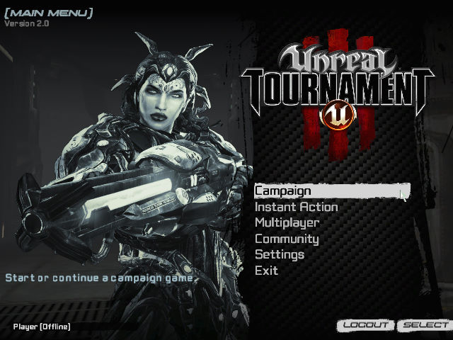
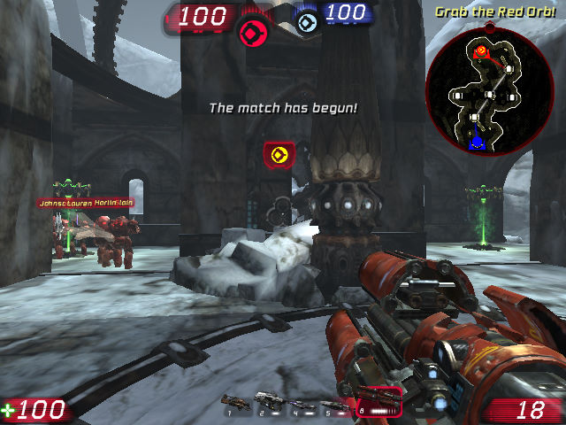

名稱：魔域幻境之浴血戰場／虛幻：武林大會／競技場／錦標賽／冠軍爭奪賽3 (Unreal Tournament 3，英文版)
簡介：EPIC 2007年出品的第一人稱射擊遊戲，由Midway代理發行，2009年推出免費的「泰坦
（Titan）」資料包。本遊戲雖是系列的第四部，但由於前作2003與2004均使用相同的
引擎，且內容與架構過於相似，故將本作定調為第三代 [待補]。


保護：序號（F6EJ-2KA6-PAAM-WWGM）
備註：本遊戲有2007原始版光碟和2010再版光碟兩種，第一片幾本上都相同（後者多了手冊），
第二片2007版為Bonus CD，主要介紹遊戲的開發與歷史，2010版則為更新檔Patch CD
（UT3Patch4和泰坦資料包）。
備註：安裝泰坦資料包前，需先做UT3Patch4更新。
備註：VirtualBox無法執行，虛擬機請使用VMware。
備註：遊戲需要安裝PhyX（本版為7.09.13，無獨立安裝檔）。
備註：遊戲需要d3dx9_35.dll、d3dx10_35.dll、XINPUT1_3.dll
說明：離線遊戲不能玩Campaign，只能玩Instant Action。